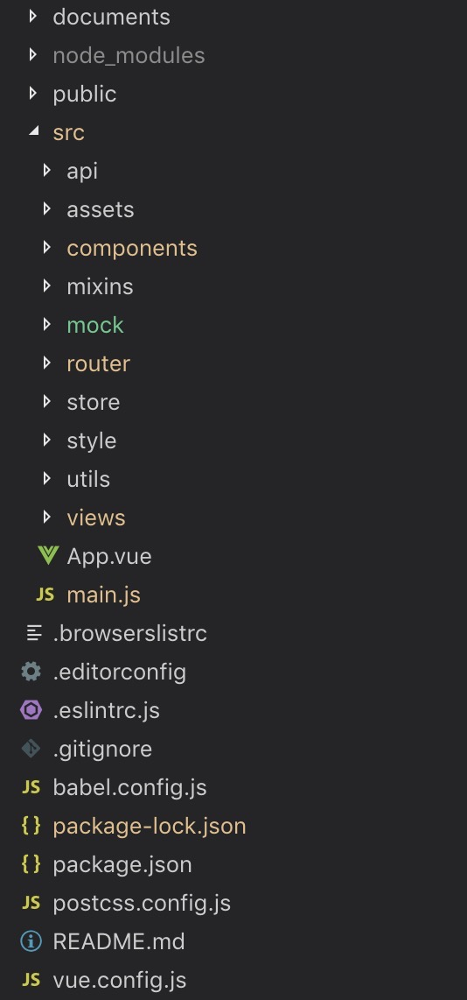

一、 目录结构截图

二、 目录结构说明
- documents 存放项目相关的文档文件
- api api 数据接口目录
- assets 资源文件目录
- components 组件存放目
- mixins vue 混入代码目录
- mock mockjs 数据接口目录
- router 路由
- store 状态管理
- style 样式文件目录
- utils 工具类，公用代码
- views 视图
- vue.config.js 项目配置文件
注：项目是由 vue-cli 3.0 自动生成的，然后自己调整了目录结构。